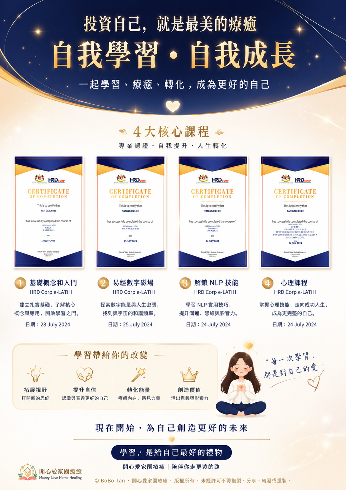
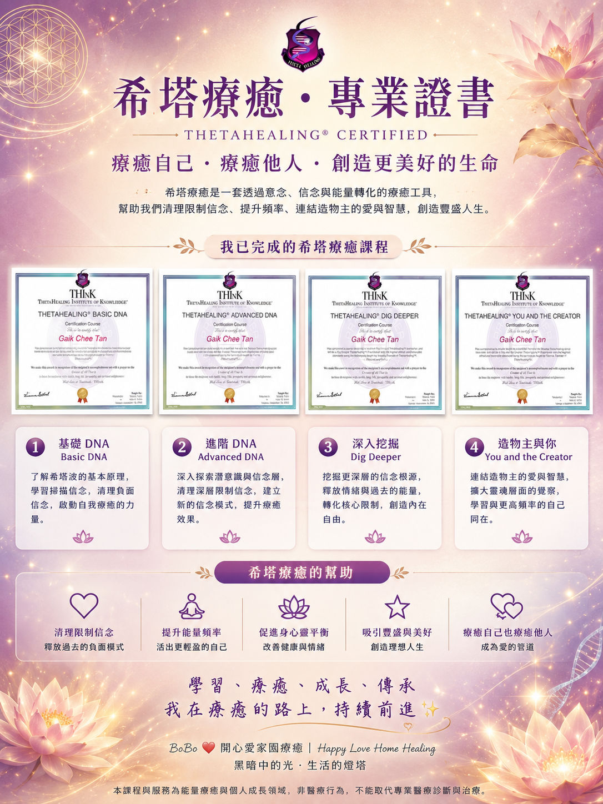
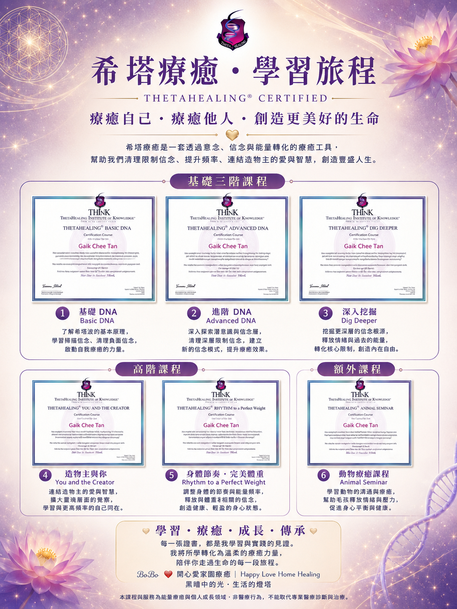
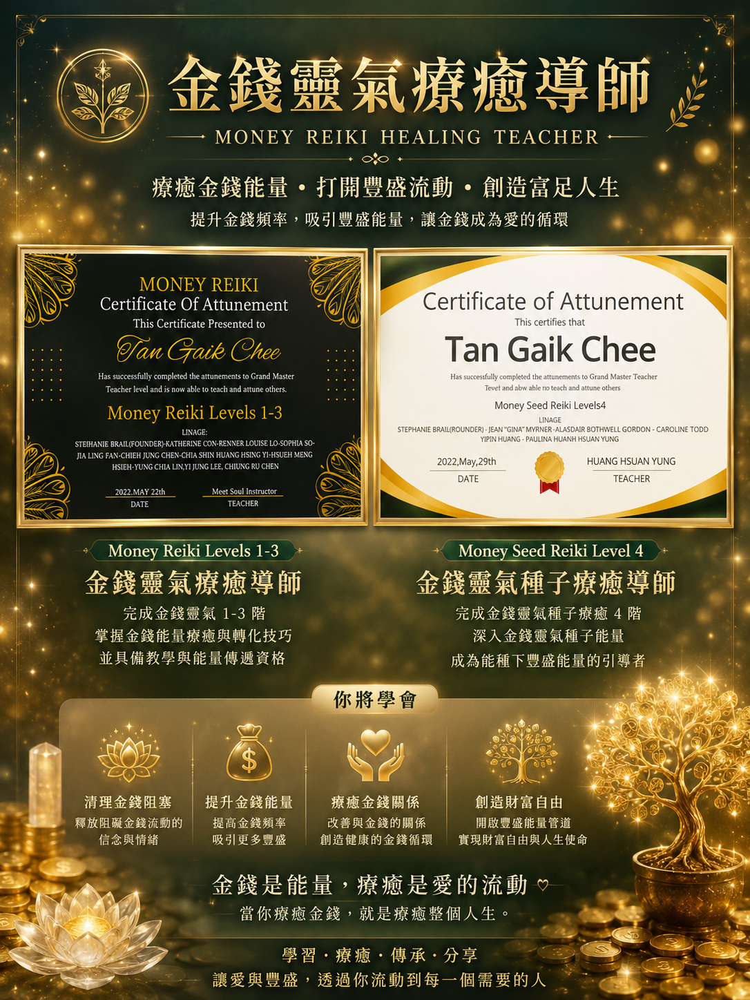
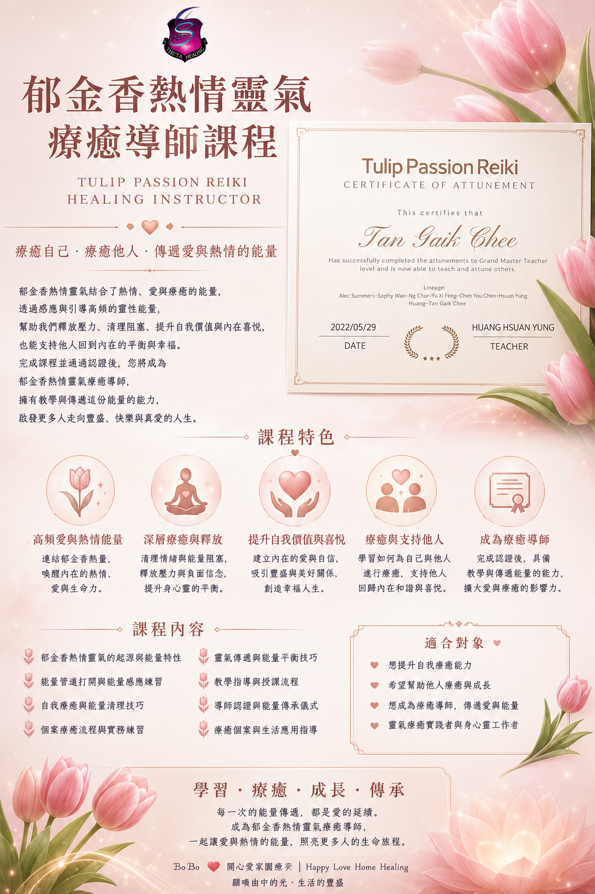

01
自我學習與持續進修
HRD Corp e-LATiH Learning Journey
- 平靜之川－基本概念和入門
- 什麼是易經數字磁場？
- 解鎖 NLP 技能・成就事業成功
- 心理課程｜掌握心理技能，走向成功人生
從生活、工作、低潮與療癒，慢慢走到今天的我
很開心你來到這裡。
這一頁，是我想慢慢分享給你的故事。


我是 BoBo。
來自馬來西亞峇株巴轄，現居新加坡。
一路走來，我和很多人一樣，經歷過情感、金錢、健康、低潮、迷惘，也經歷過想努力證明自己、想把生活過好的那些日子。
後來我慢慢接觸療癒、冥想、情緒整理、創傷知情與內在覺察，也一步一步走到今天，成為一位願意陪伴別人的療癒工作者。
這不是一個「突然變好」的故事，
而是一段慢慢跌倒、慢慢理解自己、慢慢把自己帶回來的旅程。

小時候的我，也曾經只是個很單純、很努力、渴望被理解的小孩。
我想被愛，也想做好很多事。
那時候的我，還不知道長大之後的人生，會帶我走過那麼多不同的風景。

學生時代的我，不一定是最聰明、最耀眼的人，
但我一直都願意努力。
我相信只要一步一步走，很多事情都可以慢慢做到。
也因為這樣，我養成了一種習慣：
就算害怕、就算辛苦，也還是會想撐著往前走。

長大後開始工作，也開始真正面對生活。
那些年裡，我一邊工作、一邊學習、一邊面對情感、金錢、健康與人生方向的考驗。
有時候很忙，有時候很累，有時候也會懷疑自己到底夠不夠好。
但我也沒有停下來。
我努力把日子過下去，努力學習、努力成長，努力在生活與工作中找到自己的位置。
除了工作，我也把自己的時間放進生活、旅行、運動、分享與服務裡。
我慢慢明白：
原來人生不是只有撐住，還包括學會感受、學會整理、學會讓自己活得更真實。

我也曾經有過身體狀態不太好的時候。
疲憊、壓力、情緒累積，有時候會一起壓在身上。
後來我慢慢開始學習照顧自己：
調整作息、學習休息、讓情緒有出口，也重新認識「身體正在告訴我什麼」。
我不再只是逼自己撐住，
而是開始練習用更溫柔的方式，陪自己走過那些低潮。

除了療癒與陪伴，我也一直相信：
愛，不只是說出來，也可以用行動去完成。
參與社會活動、志工服務、公益支持，對我來說不只是「做一件好事」，
而是提醒自己——當我們有一點力量的時候，也可以把那份力量分享出去。
有些溫暖，也許只是一個行動、一個陪伴、一個支持，
卻可能成為別人生命裡的一道光。
我也希望自己在照顧好自己的同時，能繼續把這份愛與善意，慢慢帶進更多人的生命裡。

後來的我，開始接觸更多療癒相關的學習：
冥想、天使牌卡、能量療癒、催眠、內在覺察、情緒陪伴……
我慢慢發現，療癒不是把自己變成另一個人，
而是學會更深地理解自己，接住自己，然後把這份理解也帶給別人。
於是，我創立了《開心愛家園療癒》。
希望透過文章、活動、課程、陪伴服務與分享，
陪伴每一位正在低潮、疲累、迷惘、想重新找回力量的人。
從療癒自己，到學會陪伴他人
每一張證書，都不只是一門課程的完成。
它記錄了我的學習、探索與實踐，
也記錄了我如何一步一步，把走過的路轉化成陪伴的力量。

HRD Corp e-LATiH Learning Journey


ThetaHealing® Practitioner Courses

Money Reiki Healing Teacher

Tulip Passion Reiki
學習連結愛、熱情與療癒能量， 陪伴自己整理內在狀態， 並將所學運用於個人成長與陪伴實踐。

Trauma-Informed Hypnosis Volunteer Instructor
創傷知情是一種理解與陪伴人的方式。
我學習不急著問： 「你怎麼了？」
而是更溫柔地理解： 「你經歷過什麼？」
在陪伴中尊重每個人的經歷、節奏與界線。

Sleep & Relaxation Learning
睡眠與情緒、壓力和生活節奏有著密切的關係。
透過持續學習，我進一步理解睡眠與身心放鬆， 並將相關概念融入日常自我照顧與陪伴練習。
一路走來，我慢慢明白：
真正的力量，並不是永遠不會脆弱，
而是在脆弱的時候，依然願意陪自己慢慢走。
療癒，不是變成一個完美的人。
而是慢慢找回真正的自己。
如果你現在也正走在一段辛苦的路上，
我想讓你知道：
❤️ 你不是一個人
❤️ 你可以慢慢來
❤️ 你值得被理解與陪伴
❤️ 你也可以重新把自己帶回來
如果我的故事，能帶給你一點點安定、一點點力量、或一點點希望，
那就是我創立《開心愛家園療癒》最大的意義。
BoBo ❤️ 我在
黑暗中的光．生活的燈塔
每天 25 分鐘，陪伴自己。
種下一顆幸福種子，讓心慢慢長大。